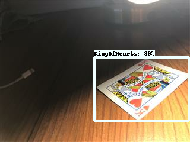
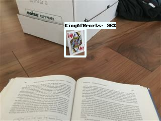
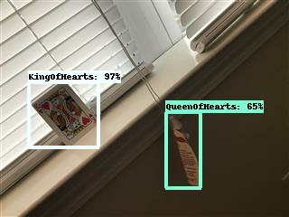

This was the first week that we really got started with our project. We previously met with our customer,
hammered out the initial ideas for our requirements and put together a pretty simple schedule to at
least keep us on the right path for the next few weeks until we can put together something of more substance.
According to our requirements and our schedule, this first week was originally planned to be the week that we
finished the object-recognition tutorial hosted by Google on the TensorFlow repository. We determined
that it would probably be best if each of us did the tutorial independantly to get familiar with the tools
that we will be using throughout the semester. In the end, we did achieve this goal, but just barely. I was
the only one on the team to use a linux machine to work through the tutorial, and it soon became obvious
that it was really designed for linux and not windows so I had a much easier time than most of the team.
Another team member had a mac which also proved to work quite well with the tutorial.
This wasn't the only issue we ran into, however. The tutorial had been designed to work with TensorFlow 1.2.
This posed a problem since the rest of the TensorFlow repository had changed very significantly since 1.2
which rendered the tutorial out-of-date and incorrect in some cases. After working through it, I was
unable to get any of my training
jobs to start successfully on the cloud platform. After doing some research, trying a number of fixes, and
ultimately starting about 10 failed jobs, I was able to find a fix. Luckily, with github, it is easy to roll
back a repository to a previous state. So, by rolling the entire TensorFlow repository back to 1.2, I was finally
able to get the tutorial to work and run machine learning training and evaluation jobs on the Google Cloud
Platform. Unfortunately all of the team didn't reach this point
(trying to do this with Windows is significantly more
challenging) but I think since we did get most of the way there, we can call this week a success!
I originally
trained the model using a "standard_cpu" machine offered by Google Cloud Platform but that proved to be incredibly
slow (20 seconds per simulation step). By changing to using 5 "standard_gpu" machines, this sped up to about 1
second per step and the model was able to converge and predict with relatively high accuracy the breeds of
cats and dogs based on images (this was the purpose of the tutorial). For the time being, we will probably
continue to work with TensorFlow 1.2 but may revisit using TensorFlow 1.4 in the future. TensorFlow 1.4 was
released very recently and still doesn't seem to fully work on Google Cloud Platform anyway, so I don't think
this is a huge loss. Moving forward, our next goal will be to add annotated images of cards to the
current dataset containing cats and dogs. The idea is to get the model to accurately identify cards as separate
objects than cats and dogs. It should be a fun week!
This week, the primary focus was creating an initial dataset to start training a model that can identify playing cards in images. In order to accomplish this, we selected 4 cards (Jack of hearts, Queen of hearts, King of hearts, and Ace of diamonds) to begin testing with. The main goal here is to train the model to recognize these 4 cards and be able to identify them in images. As part of this, I took ~240 images (60 of each card) and used the program labelImg in order to annotate them. These annotations are necessary so that the model can learn what each of the cards look like. In addition, I spent some time researching the different configurations that can be used when doing training. It is very likely that we will have to play with these configurations in order to get the results we desire. This next week, we will be working to train the model and will evaluate its performance using a portion of the images we gathered. Depending on its performance, we will either need to further refine the model to identify these four cards or will be able to start adding more cards to the training set.
This week, we used the images collected last week to begin training a TensorFlow model to detect cards in images.
My primary contribution this week was taking all of the images the group collected last week and using them to
train a model on the Google Cloud Platform. While originally I thought this task would be fairly straightforward
(after going through the tutorial a couple weeks ago), I soon found that this was going to be quite the involved
task.
Slight differences in the annotations and filenames used by each individual for the card images made just
getting the data set into a standard form quite the challenge. After that, altering the tutorial to actually use
our data set instead of the pets data set required the manipulation of a large number of scripts and configuration
files. In order to facilitate this, I set up a new repository here
that contains all of the new files for the cards data set as well as all the important library files necessary
to properly setup a model for training on the cloud.
The next issue was the fact that we used rather large images (in some cases images with 4k resolution!). This was such
an issue that we actually kept running into memory issues on the cloud with our memory usage surpassing 80 gigabytes for
training. We would always hit the memory cap and cause the job to fail. After doing some research online, I was able to
resolve this by limiting the batch queue size at the expense of training speed.
After finally getting the job to successfully run for about 2 hours on 10 cloud-based GPUs, we began to get some very
promising results. The images below show the identifications that the neural net was able to make after this training.
As you can see, the results are very promising, but they are definitely not perfect and there is still a lot of room
for improvement.

This image shows the correct identification of a King of Hearts with 99% certainty!

This image shows the proper identification of a card object but as you can see, it is mislabled as a King of Hearts rather
than a Queen of Hearts.

This image shows the proper identification of the King of Hearts with 97% certainty but the misidentification of a tag hanging
from the blinds as a Queen of Hearts.
In order to improve our results, we decided to resize all of our images down to about 320x240 pixels. This serves the purpose
of greatly speeding up the training time as well as allowing our model to generalize better since it is less likely to
overtrain on low resolution images. For my contribution, I resized and reannotated all 240 of the images I took
last week. This week we will be training with these new smaller images and I am excited to see
what kind of results we are able to achieve.
This week marked a shift in our goals for the rest of the semester. Given our rapid progress in identifying cards (we are
currently able to identify individual cards, bypassing the adding suits and adding values parts of the project), we have
decided to shift our requirements to better reflect this. We will continue to add more cards to the dataset but will begin
work simultaneously on a simple web application that will allow users to interface with our trained card detection model.
My main contribution this week was using the smaller images created last week to train a new model using the Google Cloud
Platform. Our results were even more promising than the first dataset and we are excited to include this progress in our
presentation this week. It was also nice to see how quickly this new model trained compared to the model trained with the
much larger images. My other contributions were helping to prepare the presentation for this week and updating the
introduction and requirements web pages to reflect the shift in our requirements for the semester.
I also meant to add another 240 images to our dataset like the rest of the group but was unable to complete that this
weekend. I have all of the images and have started annotating them, but I will have to catch up this week and finish
that up in addition to my work for this week.
These last two weeks our group presented to the class, started designing our web application after updating our requirements
and then continuing wrapping up our annotations so that we can focus on the more exciting aspects of our project moving forward!
My primary contributions these last two weeks were finishing my share of the annotations for all 24 cards that we are working
to identify! In total, I completed annotations for ~960 images in the last two weeks. It is a big weight off my shoulders now
since these annotations were definitely the most grueling and dull part of the project. In addition, I was able to successfully
freeze a prediction model (a model that will not train further and will only make predictions) and shared it with my team so that
we can develop around it for our web application.
This week, I will be retraining our model with the new annotations we have and testing its performance. As long as our precision
continues to be high, I don't foresee any major issues with this part of our project. I will also start the process of making a
dedicated test image set which is standard practice for this kind of work based on what I've found through research. So far we have
just been randomly selecting images from our training set to use as the test set but this is not ideal. Lastly, I would like to
work on the frontend design of the web application, but I will see how much time I have.
This week our team started the development of a test plan and finished annotating our entire data set.
Since our dataset is now complete, I adjusted our training code to handle all 24 cards in order to
prepare for final training. Unfortunately I was unable to train a new model this week as anticipated,
but that should be happening in the next day or two. Adjusting the training code to handle all 24 cards
took more work than expected.
In addition, this week I will help to develop our test plan and as part of that start setting aside
a special test data set to use specifically for testing our final model. I will also contribute to the
client-side code for our web application since we now have a basic design up. This last week proved to be
significantly more busy than I thought so I accomplished less than I hoped to, but this week should
be much better in that regard.
This week, our team continued the development of the web application that will deliver predictions to users
and also finalized our test plan. My primary contribution was training the final model that we will be using
for our predictions.
This training went well, but not quite as well as expected. Originally, I trained the model with all of the
annotations we had collected for all 24 cards in the past couple weeks. This included a number of images that
were grabbed from the internet instead of taken directly. After training, the model was fairly accurate but
wasn't quite to the level we hoped to see. As an experiment, I removed all of the images found online and
trained another model with just the images we had taken as a group. This led to better results, but again it
was not quite as good as we were hoping to achieve. This week I will be focusing on how to improve our results.
Ideally we want to achieve a precision of about 95%. We are currently sitting right around 85-90% total precision
with certain cards much more difficult for the model to identify. I also contributed to the testing page of the
website.
This week I focused on improving the model from the last results we had. While our last results weren't necessarily
bad, we are hoping to achieve a better detection rate. To this end, I spent most of my time this week researching
how to improve the performance of object detection in Tensorflow. I came across a number of helpful articles and
documents that will be a lot of help as we try to improve our model. For example, changing the learning rate and
the box anchor configurations seem to play a disproportionately large role in accurate image identification so we
will likely start there.
The first change I experimented with this week was using fewer GPUs to train on and starting completely fresh from
an unaltered model. This training seems to have had some promising results. Our mean average precision (a popular
value used to judge the performance of a model across many different classifications - in our case, 24 cards) is
now the highest we've achieved with all 24 cards at 0.91 (it ranges from 0 to 1, with 1 being perfect identification of
every test image).
We will likely experiment with the anchor point configurations and learning rate throughout this week to see if we can
push this precision even higher. Luckily for us, the automated testing jobs we run are relatively easy to setup and
evaluate so we should be able to tell pretty quickly if these changes help.
In addition to my work on the model, this week I contributed to some of our webpages as well as our documentation for
our code that we will submit for the review this week.
This week I tried a number of new configurations of the model in order to try and improve our prediction
accuracy. Our results are still decent but after freezing the model and testing it with real submissions
it still leaves a lot to be desired. Changing the training rate and a few other settings didn't have any
large effect on the model's performance. This week, we will experiment with a few forms of data augmentation
in order to increase the size of our training data artificially. This may prove helpful, but if not, it
won't take much time just to try it.
In addition, a large focus this week will be preparing our presentation and polishing up our documentation
for the project.
This week I tried training one final model using the built in data augmentation options in Tensorflow.
Unfortunately, these augmentations dramatically hurt the precision of the model, so we weren't able to
improve upon the model we are currently using. These data augmentation options are definitely worth
exploring more for future teams, however, since they may help generalize the model even further if
configured properly.
In addition, I worked to develop our team's final presentation and made some small contributions to our
documentation. This week, I will be focusing on wrapping up our documentation for the project and finishing
the last sections of the website. Since it seems likely that this project will be picked up by another team
in the future, this documentation will be incredibly important.